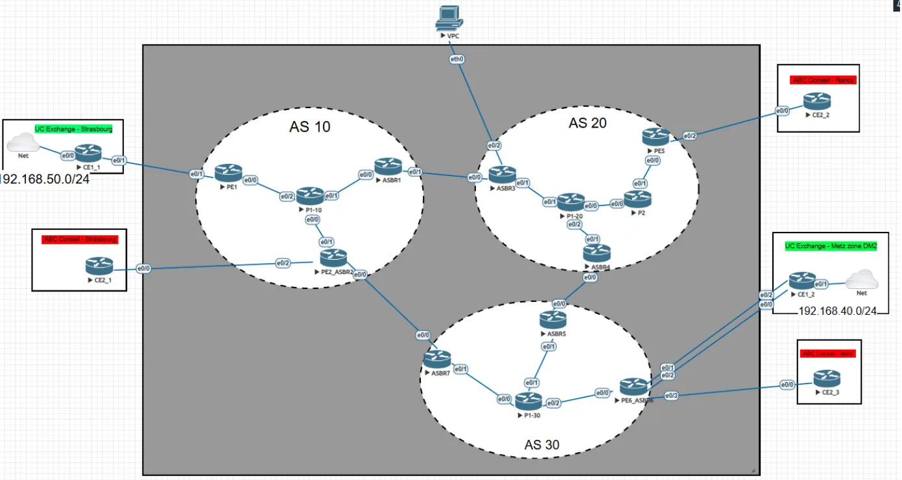
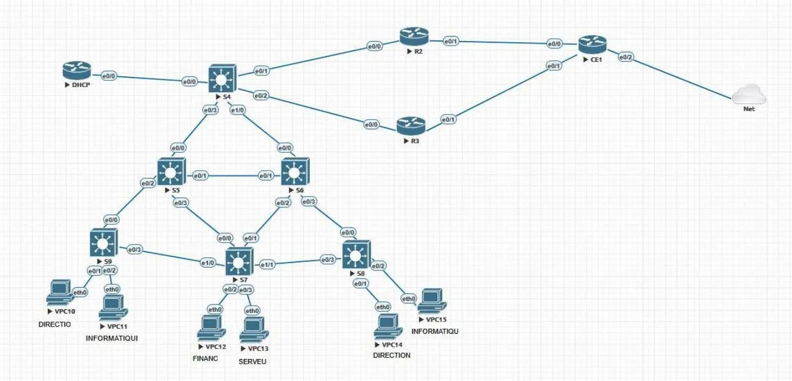
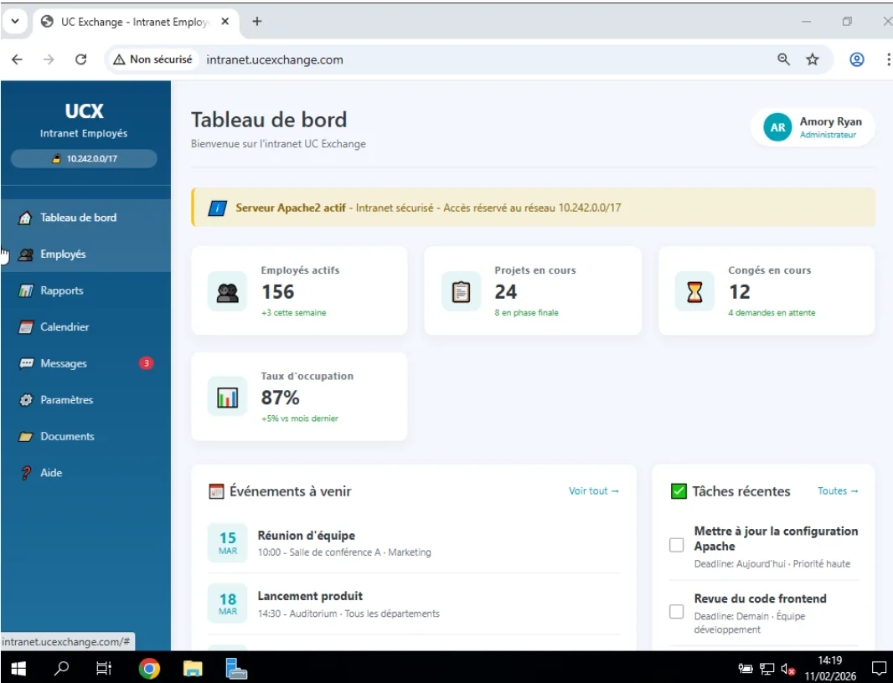
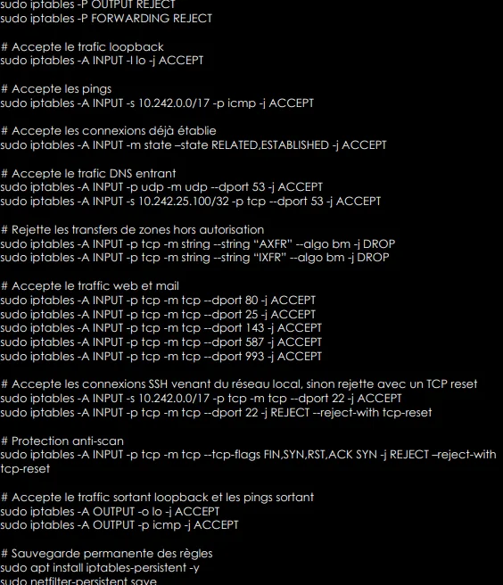

Réseau sécurisé multi-sites
Infrastructure inter-sites pour deux entreprises de e-commerce présentes à Strasbourg, Nancy et Metz : LAN, services réseau et cœur opérateur MPLS-VPN, avec documentation des choix de sécurité.
- Cadre
- BUT R&T - parcours Cyber
- Équipe
- Trinôme (LAN - Services - FAI)
- Sites
- 3 sites - 3 AS
- Statut
- Terminé
01En résumé
Objectif
Concevoir l'infrastructure réseau sécurisée de deux entreprises (UC Exchange, ABC Conseil) réparties sur trois sites.
Ma contribution
Travail en trinôme sur trois volets : LAN, services réseau et interconnexion opérateur, plus l'audit de sécurité.
Résultat
Réseau fonctionnel et redondé, services accessibles, tests de basculement et de filtrage documentés.
02Le projet
Le travail se décompose en trois volets complémentaires :
- LAN : architecture hiérarchique, VLAN par service, routage inter-VLAN (router-on-a-stick), haute disponibilité (VRRP), prévention des boucles (MST), DHCP et NAT/PAT.
- Services réseau : DNS primaire Windows et secondaire Linux, serveur web Apache (intranet / internet), messagerie Postfix + Dovecot, Active Directory (bonus).
- Interconnexion (FAI) : cœur MPLS-VPN réparti sur trois systèmes autonomes, routage RIP/OSPF, sessions BGP / MP-BGP, route-reflector, filtrage des préfixes et redondance des liens.
Une attention particulière a été portée à la sécurité : durcissement des équipements, filtrage des flux, restrictions d'accès SSH, DNSSEC et documentation détaillée du niveau de sécurité.
03Démarche
- Analyse des besoins : services, contraintes de sécurité et plans d'adressage (10.242.xy.0/17 pour UC Exchange, 10.252.xy.0/18 pour ABC Conseil).
- Conception LAN : VLAN par service (Direction, Informatique, Finance, Serveurs), router-on-a-stick, VRRP et MST.
- Services : DNS primaire sous Windows Server 2019, DNS secondaire, Apache et Postfix/Dovecot sous Debian 13, Active Directory et règles de pare-feu.
- Interconnexion FAI : AS 10, 20 et 30 en RIP/OSPF, sessions BGP/MP-BGP, route-reflector, VRF clients, filtrage des préfixes et NAT.
- Tests : pings internes, résolution DNS, transfert de zone, basculement de liens, accès public au web via NAT.
- Audit de sécurité : vérification des règles iptables, des restrictions SSH, de DNSSEC, du filtrage des préfixes et des politiques d'accès.
04Technologies
- VLAN & trunks 802.1Q
- Segmentation logique des services
- MSTP
- Redondance et prévention des boucles
- VRRP
- Haute disponibilité des passerelles
- RIP / OSPF / BGP
- Routage intra-AS et inter-AS, MP-BGP pour les préfixes VPNv4
- MPLS-VPN
- VRF clients et route-reflector
- DNS + DNSSEC
- Primaire Windows, secondaire Linux, transferts de zone signés
- Postfix / Dovecot
- Messagerie SMTP / IMAP
- Active Directory
- Contrôleur de domaine et jonction des clients
- iptables & TCP Wrappers
- Filtrage et restriction des accès SSH
05Galerie




06Compétences BUT mobilisées (Apprentissage Critique)
AC21.01Configurer et dépanner le routage
dynamique
RIP, OSPF, BGP et MP-BGP pour la connectivité inter-AS et le transport des préfixes VPNv4.
AC21.04Déployer des services réseaux avancés
DNS, web, messagerie et Active Directory avec intégration sécurisée.
AC21.05Identifier les réseaux opérateurs
Architecture MPLS-VPN, systèmes autonomes, BGP et mécanismes de redondance.
AC22.03Connexion multi-site via un réseau
opérateur
Interconnexion MPLS-VPN entre les sites via les ASBR et les sessions MP-BGP.
AC24.02CyberOutils fondamentaux de sécurisation
Pare-feu iptables, filtrage de ports, restrictions IP, DNSSEC.
AC24.03CyberSécuriser les services
Authentification, chiffrement, restrictions d'accès et durcissement de DNS, web, mail et AD.
07Bilan
Ce que j'en retiens
Intégrer des technologies complémentaires (LAN, services, opérateur) dans une même infrastructure. J'ai approfondi le routage dynamique, MPLS-VPN, le durcissement et l'administration de services critiques, et la rédaction d'une documentation qui justifie chaque choix d'architecture.
Avec du recul
Je simulerais davantage de pannes multiples en mesurant les temps de basculement, j'automatiserais les configurations (Ansible) pour la reproductibilité et j'ajouterais une supervision en temps réel (SNMP, NetFlow).